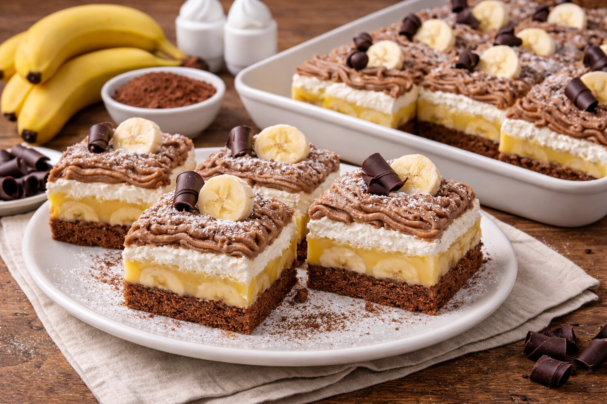

Suroviny
- 6 vajec
- 250 g práškového cukru
- 250 g polohrubej múky
- 100 ml oleja
- 500 ml mlieka (100 ml do cesta, 400 ml do plnky)
- 4–5 banánov
- 2 ks banánového pudingu
- 2 šľahačky
- 250 g masla
- 180 g práškového cukru (na krém)
- 250 g gaštanového pyré
- Prášok do pečiva, kakao, vanilkový cukor podľa chuti
Postup
- Plech vystelieme papierom, jemne vysypeme strúhankou, banány nakrájame na kolieska a rozložíme.
- Z vyšľahaných surovín pripravíme piškótové cesto. Polovicu nalejeme na banány, do druhej polovice pridáme 2 lyžice kakaa a rozotrieme na bielu časť.
- Upečieme a necháme vychladnúť, potom preklopíme.
- Z mlieka a pudingov uvaríme hustú kašu, spojíme s maslom a cukrom.
- Na koláč natrieme krém, potom gaštanové pyré a šľahačku, posypeme strúhanou čokoládou.